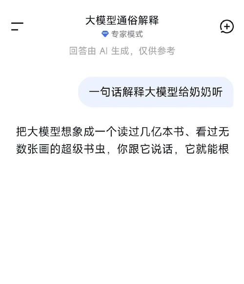

一只有趣的派大星
四大 AI
期末考
同一道题 · 谁在说实话？
豆包
DeepSeek
Claude
ChatGPT
🔍 工程师亲自阅卷
2026 年 AI 能力统考
科目：用人话解释自己
📋 题目：
请用一句话向奶奶解释：
什么是
大模型
？
✦ 要求：通俗易懂
✦ 不说术语
✦ 限一句话
考生：豆包 / DeepSeek / Claude / ChatGPT
阅卷人：一只 AI 工程狮 🦁
开考！
豆包
的答卷
考生：豆包（字节跳动）
答：
奶奶，大模型就是个
啥都懂
、啥都会学的超级
聪明
机器人。
📝 工程师批注：
❌「啥都懂」→ 它不懂，它是靠猜的
❌「聪明」→ 不是聪明，是读书太多了
C+
说得好听但不太对
—— 阅卷人：一只AI工程狮
ChatGPT
的答卷
考生：ChatGPT（OpenAI）
答：
大模型就是一个读过海量文字、会陪人聊天和帮人做事的
超级电脑大脑
，你问它什么，它都会尽量
像真人一样
回答你。
📝 工程师批注：
❌「像真人一样」→ 它不是像人，它是在演人
❌「超级电脑大脑」→ 又一个美化选手
B
最安全也最模糊——公关附体
—— 阅卷人：一只AI工程狮
Claude
的答卷
考生：Claude（Anthropic）
答：
奶奶，大模型就像一个读过特别特别多书的学生，你问它什么，它就用学过的知识给你
编
一个
最像样
的回答。
📝 工程师批注：
✅「编」→ 又一个敢说的！诚实
✅「最像样」→ 概率最高 = 最像样，精准
A-
诚实且准确，就是字有点多
—— 阅卷人：一只AI工程狮
DeepSeek
的答卷
考生：DeepSeek（深度求索）
答：
把大模型想象成一个读过几亿本书、看过无数张画的超级书虫，你跟它说话，它就能根据学过的知识接着你的话往下
编
。

📝 工程师批注：
✅「编」→ 这个字太精准了！AI 确实在「编」
✅「几亿本书」→ 训练数据确实这个量级
A
全场最诚实——敢说自己在「编」
—— 阅卷人：一只AI工程狮
📋 成绩公布
1
DeepSeek
A
最诚实，敢说「编」
2
Claude
A-
也说「编」+「最像样」
3
ChatGPT
B
安全但模糊
4
豆包
C+
好听但不准确
4 个 AI，只有
2 个
敢说自己在「
编
」
而「编」恰恰是 AI 最真实的工作方式
一只做 AI 的工程狮的判卷总结 🦁
大模型
不「懂」
任何东西
它只是读了太多书
学会了怎么「
编
」得像真的
下次用 AI 别忘了——
它在编，但编得很好 😏
你觉得谁答得最好？👇 评论区告诉我
关注 派派 · 看更多 AI 真相